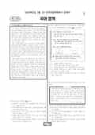

문제지

전국연합학력평가 · 시·도교육청 주관
2026년 3월 고3 학력평가 국어 언어와매체 1등급컷은 원점수 75점(추정), 표준점수 최고점은 161점입니다.
원점수 1등급컷은 공식 발표값이 아니라 EBSi·입시기관 값입니다. 등급별 값은 등급컷 표, 출처 구분은 데이터 원칙에 있습니다.

시험지를 먼저 풀어 보세요. 등급컷·표준점수·난이도는 흐리게 가려 뒀어요.
| 등급 | 원점수 | 표준점수 | 백분위 |
|---|---|---|---|
| 1 | 75 | 134 | 95 |
| 2 | 68 | 126 | 89 |
| 3 | 60 | 116 | 76 |
| 4 | 51 | 106 | 60 |
| 5 | 40 | 94 | 39 |
| 6 | 30 | 83 | 22 |
| 7 | 23 | 74 | 11 |
| 8 | 18 | 68 | 3 |
등급별 컷 · 입시기관 3곳 원점수 추정 종합(이투스·종로학원·대성마이맥) · 공통+선택 점수 조합에 따라 다를 수 있음 · 만점 100점
| 등급 | 표준점수 이상 | 인원(명) | 비율 |
|---|---|---|---|
| 1 | 134 | 15,538 | 4.67% |
| 2 | 126 | 22,064 | 6.63% |
| 3 | 116 | 42,739 | 12.84% |
| 4 | 106 | 54,612 | 16.41% |
| 5 | 94 | 67,462 | 20.27% |
| 6 | 83 | 56,828 | 17.08% |
| 7 | 74 | 38,232 | 11.49% |
| 8 | 68 | 23,752 | 7.14% |
| 9 | 47 | 11,573 | 3.48% |
국어 영역 전체 응시자 기준이에요.
출처: 시·도교육청이 공개한 전국연합학력평가 성적 분석·통계자료(공개 자료 보기).
EBSi 응답자 기준으로 가장 많이 틀린 문항은 39번(2점)이고, 오답률은 83.6%입니다. 상위 15문항 중 7문항은 정답보다 한 오답을 고른 사람이 더 많았습니다(39번: 정답 ① 16.4%, ⑤ 29.9%). 오답률 50%를 넘은 문항은 15개입니다.
| 순위 | 문항 | 배점 | 오답률 | 정답 | 많이 고른 오답 |
|---|---|---|---|---|---|
| 1 | 39번 | 2점 | 83.6% | ① | ⑤ 29.9% |
| 2 | 12번 | 2점 | 82.8% | ③ | ① 24.6% |
| 3 | 19번 | 2점 | 81.2% | ③ | ② 34.1% |
| 4 | 13번 | 3점 | 78.1% | ② | ③ 27.1% |
| 5 | 34번 | 3점 | 77.6% | ② | ③ 33% |
| 6 | 6번 | 2점 | 75.5% | ① | ④ 51.9% |
| 7 | 31번 | 2점 | 68.8% | ② | ⑤ 25.7% |
| 8 | 15번 | 2점 | 68.4% | ① | ⑤ 29.8% |
| 9 | 11번 | 2점 | 68% | ② | ③ 30% |
| 10 | 18번 | 2점 | 65.7% | ① | ② 38.9% |
| 11 | 45번 | 3점 | 62.2% | ③ | ① 33.5% |
| 12 | 22번 | 2점 | 58.7% | ④ | ⑤ 22.2% |
| 13 | 20번 | 2점 | 58.4% | ⑤ | ④ 32.5% |
| 14 | 26번 | 3점 | 57.7% | ⑤ | ② 33.3% |
| 15 | 7번 | 2점 | 52.8% | ③ | ② 23.9% |
EBSi 가채점 응답자 기준 · 전 문항 중 오답률 상위 15문항
출처: EBSi 역대 등급컷·오답률 공개 화면. 가채점에 참여한 EBSi 이용자 응답이라 전체 응시자 정답률과는 다를 수 있습니다.
발행 기관: 시·도교육청(전국연합학력평가). 파일 위치: 이 사이트가 보관한 사본. 저작권은 발행 기관에 있습니다. 원본과 다르거나 게시 중단이 필요하면 연락처로 알려 주세요. 등급컷 출처 구분은 데이터 원칙에서 설명합니다.
막대 색은 역대 대비 난이도 · 진한 막대가 이 시험 · 막대를 누르면 그 회차로 이동
| 회차 | 1등급컷 | 표점 최고 | 1등급 표점 | 난이도 |
|---|---|---|---|---|
| 3월 학평2026년 고3이 시험 | 75 | 161 | 134 | 매우 어려움 |
| 10월 학평2025년 고3 | 88 | 142 | 131 | 보통 |
| 7월 학평2025년 고3 | 90 | 139 | 131 | 보통 |
| 5월 학평2025년 고3 | 95 | 134 | 130 | 매우 쉬움 |
| 3월 학평2025년 고3 | 78 | 159 | 136 | 매우 어려움 |
| 10월 학평2024년 고3 | 94 | 134 | 129 | 쉬움 |
| 7월 학평2024년 고3 | 94 | 135 | 130 | 쉬움 |
| 5월 학평2024년 고3 | 93 | 135 | 129 | 매우 쉬움 |
| 3월 학평2024년 고3 | 83 | 150 | 133 | 어려움 |
| 10월 학평2023년 고3 | 97 | 128 | 126 | 매우 쉬움 |
공통과목 독서는 학습 독서에서 메모하기 전략을 다룬 독서론(1~3번), (가) 체포·구속 같은 강제 처분에 대한 영장 심사와 (나) 체포·구속 적부 심사를 묶은 주제 통합형 법 지문(4~9번), 도파민성 뉴런과 선조체·창백핵·시상으로 이어지는 운동 조절 경로를 다룬 과학 지문(10~13번), 호네트의 인정 이론을 다룬 인문 지문(14~17번)으로 구성되었습니다.
가장 많이 틀린 12번(2점, 82.8%)은 도파민이 운동 조절에 관여하는 두 경로의 차이를 이해하는 문항, 13번(3점, 78.1%)은 파킨슨병과 약물 치료를 다룬 <보기>에 지문을 적용하는 문항이었습니다. 법 지문의 6번(2점, 75.5%)은 영장 심사와 적부 심사를 비교하는 문항으로 응답의 51.9%가 한 오답에 몰렸습니다.
문학은 이성복 「서해」·김기택 「어떻게 기억해 냈을까」와 유경종의 한문 수필 「의원지」를 묶은 갈래 복합(18~22번), 안도환의 유배 가사 「만언사」(23~26번), 이문열의 소설 「들소」(27~30번), 작자 미상의 고전소설 「수매청심록」(31~34번)으로 구성되었습니다.
19번(2점, 81.2%)은 두 현대시의 [A]와 [B]에서 '웃음'과 '걸음' 같은 시어의 배치와 대응을 이해하는 문항, 34번(3점, 77.6%)은 공적 권력과 사적 관계가 맞물리는 양상을 다룬 <보기>로 「수매청심록」을 감상하는 문항, 31번(68.8%)은 같은 작품의 내용 이해 문항이었습니다. 독서와 문학이 고르게 어려워 최고점자가 4명에 그쳤습니다.
언어와 매체에서 가장 많이 틀린 39번(2점, 83.6%)은 용언의 연결형이 포함된 합성어와 관형사형이 포함된 합성어가 모두 쓰인 예문을 고르는 문항으로, 공통과목 12번보다도 오답률이 높았습니다.
문법 지문은 서술어가 요구하는 필수 성분과 문장 구조를 다루었고, 매체는 미래 사회의 흐름을 다루는 실시간 인터넷 방송을 다루었습니다. 합성어의 구성 요소를 분석하는 문항은 어근과 어미가 결합한 형태(-아/어, -고, -(으)ㄴ, -(으)ㄹ)를 단어마다 표시해 보는 연습이 필요합니다.
3월 학력평가로는 이례적으로 어려운 국어였습니다. 12·13번처럼 여러 단계의 경로를 다룬 과학 지문은 경로를 화살표로 그려 '활성화/억제'를 표시하며 읽는 연습이, 6번처럼 두 제도를 비교하는 법 지문은 시점·주체·효과를 기준으로 표를 만드는 연습이 효과적입니다.